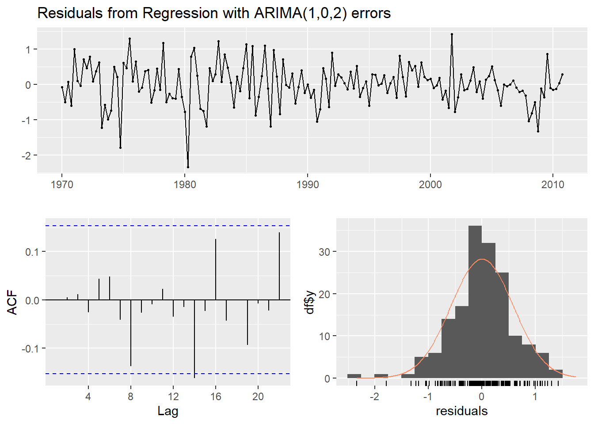

Capítulo 6 Modelos de Regressão Dinâmicos
Modelos de séries temporais como ARIMA permitem que valores da série sejam previstos a partir da inclusão de informações do passado. Por outro lado, não permitem a inclusão de variáveis relevantes como dummies de feriado, atividade dos concorrentes, mudanças nas leis, variáveis macroeconômicas e outras covariadas externas que podem ajudar a explicar a variação histórica de uma série temporal.
Podemos de regressão, como o modelo de regressão linear, permitem a inclusão de variáveis externas, mas não são capazes de modelar as dinâmicas presentes em séries temporais, como os modelos ARIMA são capazes.
Neste capítulo vamos extender os modelos ARIMA com o objetivo de permitir que outras variáveis externas sejam incluídas nos modelos.
Modelos de regressão simples tomam a forma
\[y_t = \beta_0 + \beta_1 x_{1,t} + ... + \beta_k x_{k,t} + \epsilon_t\]
onde \(y_t\) é uma função linear das \(k\) variáveis externas (\(x_{1,t},...,x_{k,t}\)), e \(\epsilon_t\) é assumido como um termos de erro não correlacionado (ruído branco). Testes como de Breusch-Godfrey foram utilizados para assegurar que os resíduos resultantes da regressão eram significativamente correlacionados.
Neste capítulo, os erros da regressão podem conter autocorrelação. Para enfatizar esta mudança, vamos substituir o uso do \(\epsilon_t\) por \(\eta_t\). A série de erros \(\eta_t\) é assumido como um processo ARIMA. Por exemplo, se \(\eta_t\) seguir um processo ARIMA(1,1,1), podemos escrever o modelo como
\[y_t = \beta_0 + \beta_1 x_{1,t} + ... + \beta_k x_{k,t} + \eta_t\]
\[(1-\Phi_1 B)(1-B)\eta_t = (1+ \theta_1 B) \epsilon_t\]
onde \(\epsilon_t\) é a série de ruído branco.
Note que o modelo tem dois termos de erro - o erro do modelo de regressão, que denotamos como \(\eta_\). e o termo de erro do modelo ARIMA, que denotamos como \(\epsilon_t\). Apenas os erros do modelo ARIMA são assumidos como ruído branco.
6.1 Estimação
Quando estimamos parâmetros do modelo, minimizamos a soma de \(\epsilon_t\) ao quadrado. Se minimizarmos a soma de \(\eta_t\) ao quadrado (que é o que ocorre quando estimamos um modelo de regressão que ignora a autocorrelação dos erros), então uma série de problemas surgem.
Os coeficientes estimados \(\hat{\beta}_0,...,\hat{\beta}_k\) não são mais os melhores estimadores, já que algumas informações importantes estão sendo ignoradas no cálculo dos coeficientes.
Qualquer teste estatístico associado com o modelo será incorreto.
Os valores de AIC dos modelos ajustados não são um bom guia de quão bom é o modelo para previsão.
Na maioria dos casos, o p-valor associado com os coeficientes será muito pequeno, e algumas covariadas parecerão importantes quando na verdade não são. Isto produzirá uma regressão espúria.
Minimizar a soma dos \(\epsilon_t\) ao quadrado evita estes problemas. Alternativamente, estimação por máxima verossimilhança pode ser utilizada, produzindo estimativas de coeficientes similares.
Uma importante consideração quando estimando um modelo de regressão com erros ARMA é de que todas as variáveis do modelo devem ser estacionárias. Portanto, devemos primeiro checar se \(y_t\) é todas as covariadas são estacionárias. Se estimarmos o modelo quando qualquer uma delas é não-estacionária, os coeficientes produzidos não serão consistentes. Uma exceção é quando variáveis não-estacionárias são cointegradas. Se existe uma combinação linear de \(y_t\) não-estacionário com um \(x_t\) estacionário, então o coeficiente é consistente.
Para tornar as variáveis estacionárias, podemos realizar a transformação de diferenciação, o que produz o chamado “modelo em diferença,” em contraste com o “modelo em nível,” em os dados originais são utilizados.
Se todas as variáveis são estacionárias, então podemos utilizar erros ARMA para os resíduos. É fácil notar que uma regressão com erros ARIMA é equivalente a uma regressão em diferença com erros ARMA.
6.2 Regressão com Erros ARIMA
A função Arima() é capaz de ajustar um modelo de regressão com erros ARIMA se o argumento xreg for utilizado. Como diferenciação está especificada, a diferenciação é aplicada para todas as variáveis antes de estimar o modelo. O comando R utilizado é
library(forecast)
Arima(y, xreg = x, order = c(1,1,0))que irá ajustar um modelo do tipo \(y'_t = \beta_1 x'_t + \eta'_t\).
A função auto.arima() também é capaz de utilizar covariadas com uso do termo xreg. O usuário deve especificar os preditores e auto.arima() seleciona o melhor modelo ARIMA para os erros.
6.2.1 Exemplo: Consumo e Renda nos EUA
A figura 6.1 mostra a mudança trimestral nos gastos com consumo pessoal e a renda disponível entre 1970 e 2016. Estamos interessados em prever o consumo com base na renda. Uma mudança na renda não necessariamente reflete uma mudança instântanea no consumo (exempl, depois de uma demissão, pode levar alguns meses para os gastos se ajustarem). Contudo, vamos ignorar esta complexidade e tentar medir o efeito instantâneo de uma mudança média na renda sore uma mudança média nos gastos.
library(fpp)
autoplot(usconsumption, facets = TRUE) +
xlab("Ano") + ylab("") +
ggtitle("Mudança Trimestral no Consumo e Renda, EUA")Figure 6.1: Mudança Percental no Consumo e Renda Trimestral para os EUA, 1970 a 2010
fit <- auto.arima(usconsumption[,"consumption"],
xreg=usconsumption[,"income"])
fit## Series: usconsumption[, "consumption"]
## Regression with ARIMA(1,0,2) errors
##
## Coefficients:
## ar1 ma1 ma2 intercept xreg
## 0.6516 -0.5440 0.2187 0.5750 0.2420
## s.e. 0.1468 0.1576 0.0790 0.0951 0.0513
##
## sigma^2 estimated as 0.3502: log likelihood=-144.27
## AIC=300.54 AICc=301.08 BIC=319.14Os dados são claramente estacionários (já que estamos considerando mudanças percentuais em vez de gastos e renda bruta), de modo que não há necessidade de diferenciação. O modelo ajustado é
\[y_t = 0.5750 + 0.2420x_t + \eta_t\] \[\eta_t = 0.6516 \eta_{t-1} + \epsilon_t - 0.5440 + 0.218 \epsilon_t\]
\[\epsilon ~ IID(0, 0.3502\]
Podemos recuperar as estimativas de \(\eta_t\) e \(\epsilon_t\) usando a função residuals().
cbind("Erros de Regressão" = residuals(fit, type="regression"),
"Erros ARIMA" = residuals(fit, type="innovation")) %>%
autoplot(facets=T)Figure 6.2: Resíduos de Regressão e Resíduos ARIMA para o modelo ajustado
O teste de Ljung-Box, ACF e histograma parecem indicar que os resíduos não são significativamente diferentes de um ruído branco.
checkresiduals(fit)
##
## Ljung-Box test
##
## data: Residuals from Regression with ARIMA(1,0,2) errors
## Q* = 4.455, df = 3, p-value = 0.2163
##
## Model df: 5. Total lags used: 8